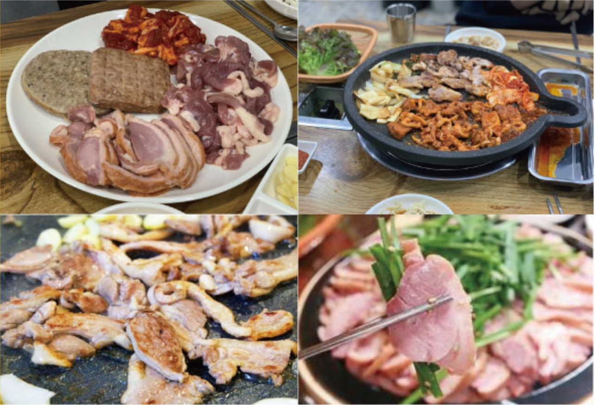
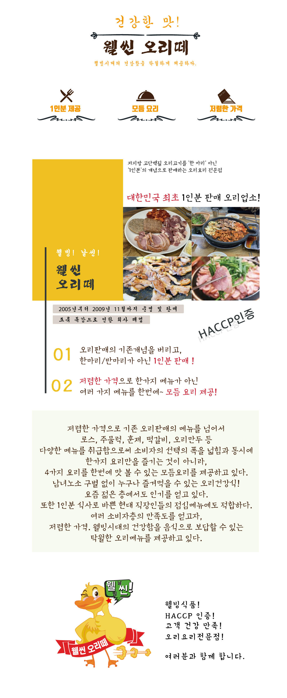

웰빙! 날씬!
웰씬
오리떼
저지방 고단백질 오리고기를
'1인분'으로도 즐길 수 있다!
대한민국 최초 1인분 판매 오리업소!

2005년부터 2009년 11월까지 운영 및 판매
조류 독감으로 인한 퇴사 폐업
01 오리판매의 기존개념을 버리고, 한마리/반마리가 아닌 1인분 판매!
02 저렴한 가격으로 한가지 메뉴가 아닌 여러 가지 메뉴를 한번에~ 모듬 요리 제공!
저렴한 가격으로 기존 오리판매의 메뉴를 넘어서
로스, 주물럭, 훈제, 떡갈비, 오리만두 등
다양한 메뉴를 제공함으로써 소비자의 선택의 폭을 넓힘과 동시에
한가지 요리만 즐기는 것이 아니라,
4가지 요리를 한번에 맛 볼 수 있는 모듬요리를 제공하고 있다.
남녀노소 구별 없이 누구나 즐겨먹을 수 있는 오리건강식!
요즘 젊은 층에서도 인기를 얻고 있다.
또한 1인분 식사로 바쁜 현대 직장인들의 점심메뉴에도 적합하다.
여러 소비자층의 만족도를 얻고자,
저렴한 가격. 웰빙시대의 건강함을 음식으로 보답할 수 있는
탁월한 오리메뉴를 제공하고 있다.
